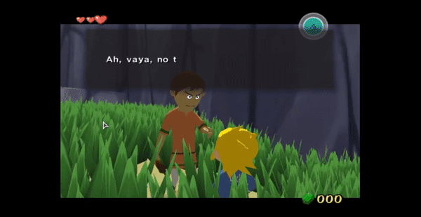

Video Game Reader
Video Game Reader est un script (Desktop Automation) proposant un système basique de traduction/solution, intégré à l'émulation. Son but est de permettre de concilier dans une certaine mesure l'expérience à la fois ludique et linguistique que constitue le fait de jouer à un jeu vidéo en langue étrangère, et ce, en mettant l'accent sur l'usage ergonomique de telles ressources au sein de l'émulation.

Principales caractéristiques
Pour le moment les caractéristiques principales de Video Game Reader sont les suivantes:
- Le logiciel est compatible avec l'émulation de la majeur partie des consoles de cinquième/sixième génération.
- Clavier visuel intégré (et doté d'un mode de saisie prédictive).
- A l'instar du clavier visuel, les fonctionnalités clés sont accessibles à l'aide de la manette de jeu.
- Lecteur intégré de guide de jeu (il requiert, néanmoins, l'installation en amont de Foxit Reader).
- Raccourcis clavier/manette paramétrables.
Téléchargement
Dernière version du code source de développement: Version 0.3 preview release
Configuration initiale
Video Game Reader est uniquement disponible pour Windows.
L'interface utiliateur est disponible en trois langues; en anglais, en espagnol et en français.
- Pour exécuter Video Game Reader depuis la source, téléchargez et installez AutoHotkey (Unicode 32-bit version) depuis Autohotkey.com.
- Double-cliquez sur Video Game Reader.ahk dans le répertoire principal. L'interface graphique est accessible depuis l'icône s'affichant dans menu de la barre d'état système.
News
Video Game Reader 0.3 released
- Le clavier visuel est désormais doté d'un mode de saisie prédictive, avec support pour les expressions régulières.